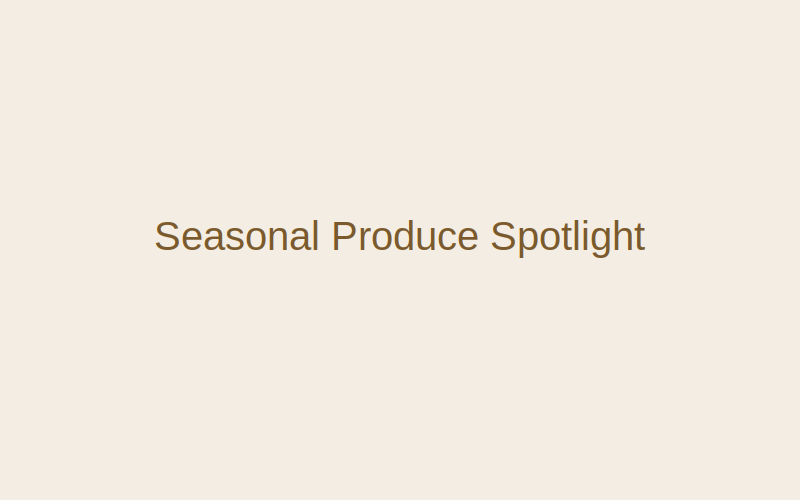
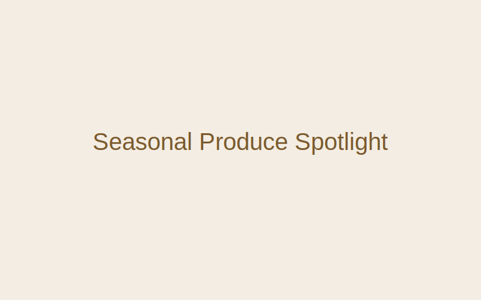

Seasonal Produce Spotlight
Posted on by The Rustic Kitchen
This is a sample blog post content to showcase layout and typography. Real blog posts would be authored here with rich media and code-friendly markup.
Posted on by The Rustic Kitchen
This is a sample blog post content to showcase layout and typography. Real blog posts would be authored here with rich media and code-friendly markup.